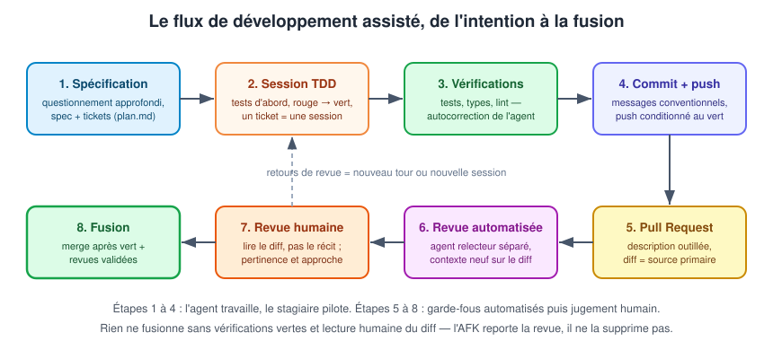
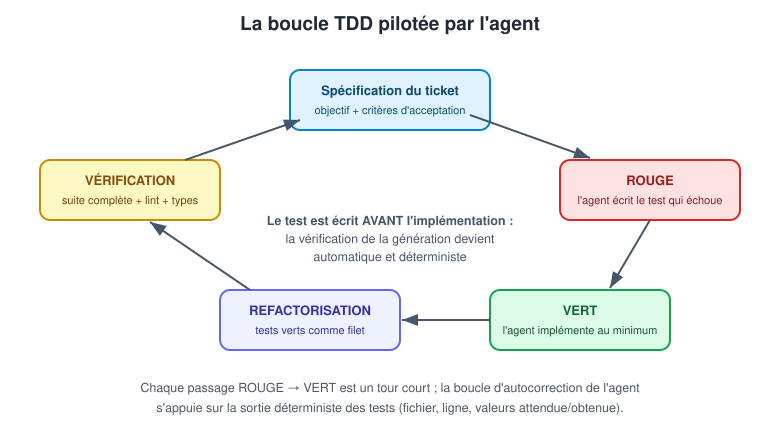
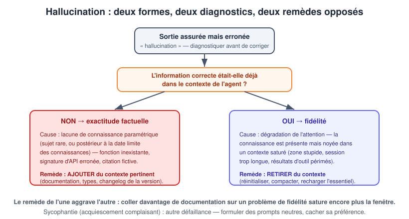

Le problème que le flux résout
Les chapitres précédents ont produit un agent fonctionnel : modèle local, harnais configuré, outils et permissions. Restent trois faiblesses structurelles du travail « à la session » :
- l'ambiguïté : l'agent comble silencieusement les lacunes d'une demande imprécise — chaque décision non prise devient une hypothèse non dite ;
- l'absence de vérification : sans garde-fous déterministes, la seule validation est la relecture humaine de tout le code produit, qui ne passe pas à l'échelle ;
- la perte : une session se termine, son contexte disparaît ; le travail de grande ampleur doit survivre aux sessions.
Le flux de développement outillé répond aux trois : la spécification lève l'ambiguïté et survit aux sessions, le TDD et les vérifications automatisées fournissent le signal déterministe, et le flux Git (commits, push conditionné, pull request, revues) rend chaque étape examinable et réversible.
Vue d'ensemble du flux
Le diagramme suivant déroule le flux complet en huit étapes : spécification, session TDD, vérifications, commit/push, pull request, revue automatisée, revue humaine, fusion. La moitié haute est le travail de l'agent sous pilotage ; la moitié basse, les garde-fous avant l'entrée dans le tronc commun.

Deux principes structurent le diagramme. D'abord, rien ne fusionne sans double signal : vérifications déterministes vertes (étape 3, répétée en CI) ET lecture humaine du diff (étape 7) — la revue automatisée de l'étape 6 filtre, elle ne remplace ni l'une ni l'autre. Ensuite, les retours de revue repartent dans la boucle : un commentaire de PR devient un nouveau tour (correction mineure) ou une nouvelle session (reprise plus large), sans jamais perdre l'historique Git qui rend tout réversible.
Vocabulaire du flux
| Terme | Définition opérationnelle |
|---|---|
| Vérification automatisée | Contrôle déterministe dans l'environnement : tests, types, lint, compilation, hooks de pré-commit. Réussit ou échoue, sans jugement. |
| Revue automatisée | Un agent (contexte ou modèle différent) examine le travail d'un autre et formule un jugement — non déterministe. |
| Revue humaine | Le stagiaire lit le diff (source primaire) et juge : le changement est-il le bon, l'approche convient-elle ? |
| Humain dans la boucle | Mode supervisé : le stagiaire examine et réoriente pendant l'exécution. |
| AFK (away from keyboard) | Mode non supervisé : l'agent travaille seul ; le stagiaire intervient avant (spec) et après (revue de PR). |
Une vérification automatisée est déterministe : mêmes entrées, même verdict — c'est ce qui permet à l'agent de s'autocorriger en boucle. Une revue (automatisée ou humaine) formule un jugement : elle peut manquer des éléments et signaler de faux problèmes. Confondre les deux conduit soit à faire confiance à un jugement comme à un test, soit à attendre d'un test qu'il détecte un problème de conception.
Le concept de conception avant l'artefact
L'agent écrit exactement ce qui est demandé — et le résultat reste parfois faux, parce que la demande capturait les éléments clarifiés et taisait les décisions non prises. L'agent a comblé les silences avec ses propres hypothèses. Rien n'a dysfonctionné : il n'existait pas encore de concept de conception partagé, c'est-à-dire une compréhension commune de ce qui est construit, distincte de tout artefact.
Le signe qu'un concept de conception est partagé est le même qu'avec un collègue : l'autre partie répond comme vous l'auriez fait à des questions pas encore posées. Jusque-là, le travail est une conversation — et écrire une spécification trop tôt ne fait que figer le désalignement dans un artefact durable.
Le questionnement approfondi (grilling)
Plutôt que laisser l'agent deviner, inverser la charge : lui demander de poser les questions. Le questionnement approfondi est une technique d'humain dans la boucle où l'agent interroge le stagiaire à la manière socratique, une décision après l'autre, en proposant pour chacune une réponse recommandée.
Mise en œuvre dans le harnais — une commande /grill (jour 2) avec un template du type :
---
description: Interroger le stagiaire avant toute spécification
agent: plan
---
Avant de rédiger quoi que ce soit, pose-moi une par une les questions
nécessaires pour lever les ambiguïtés de cette demande : $ARGUMENTS.
Pour chaque question, propose une réponse recommandée avec sa justification.
Ne passe à la question suivante qu'après ma validation.
L'agent découvre ainsi les cas limites (annulations partielles, remboursements, exécutions incomplètes…) dans la conversation, où une correction coûte une phrase — au lieu de les découvrir dans le code, où elle coûte une reprise.
Le prototypage pour trancher
Certaines questions ne se règlent pas par la conversation : ressenti d'une interaction, ergonomie d'une API dans du code appelant réel, comportement avec des volumes réalistes. Quand la réponse honnête est « il faudrait que je le voie », demander à l'agent de prototyper les deux options, examiner, trancher, reprendre la conversation. Les agents ont effondré le coût de la maquette : ce qui prenait une journée prend quelques minutes. Un prototype peut même être partiellement conservé : construire en qualité de production les parties réellement évaluées, pour les transférer dans la base une fois la décision prise.
Spécification et tickets : les artefacts de transfert
Une spécification décrit un travail qui dépasse une session : ce qui doit être construit, les contraintes, les décisions prises et la liste des tickets avec leur état. Elle existe parce que les sessions sont jetables et que le modèle est sans état : tout travail nécessitant plus d'une fenêtre de contexte a besoin d'un emplacement hors du contexte, dans l'environnement — un fichier du dépôt (plan.md, RFC, PRD selon l'échelle) que toute session neuve peut lire.
Un ticket délimite une session de travail. Sa contrainte déterminante est la taille : il doit pouvoir être terminé avant que la session ne sorte de la zone intelligente (jour 2). Le diagnostic est testable :
- les sessions se dégradent régulièrement avant la fin du ticket → tickets trop grands, découper ;
- chaque session consomme l'essentiel de son contexte en mise en place → tickets trop petits, regrouper.
Template minimal de spécification, versionné dans le dépôt :
# plan.md — Fonctionnalité : export CSV des factures
## Objectif
Permettre l'export CSV des factures d'un client, filtré par période.
## Contraintes
- Encodage UTF-8, séparateur point-virgule (compatibilité Excel FR).
- Aucune donnée personnelle dans le fichier exporté (cf. RGPD).
- Réutilise le module d'export existant (src/export/).
## Décisions prises
- Le filtrage se fait côté serveur, pas en base (volume < 10k lignes).
- Format de date : ISO 8601.
## Tickets
- [ ] T1 — Schéma de l'API d'export (fait : voir src/export/schema.py)
- [ ] T2 — Tests unitaires du formateur CSV
- [ ] T3 — Implémentation du formateur (dépend de T2)
- [ ] T4 — Endpoint HTTP + tests d'intégration (dépend de T3)
- [ ] T5 — Documentation et changelog
Les tickets indépendants (feuilles du graphe de dépendances) peuvent s'exécuter chacun dans sa session, éventuellement en parallèle via plusieurs agents ou sous-agents. L'ordre du travail découle du graphe, pas d'un plan linéaire — mais deux tickets frères qui touchent les mêmes fichiers ne se parallelisent pas : ils se bloqueraient mutuellement.
Écrire un bon artefact de transfert
Une spécification, un ticket ou un document de relais s'écrivent pour un lecteur sans aucun contexte — la session suivante ne peut pas revenir demander ce que l'auteur voulait dire :
- des chemins de fichiers précis, jamais « le fichier dont on a parlé » ;
- ce qui a été décidé ET pourquoi, pour que la session suivante ne rediscute pas ;
- ce qui est terminé et ce qui reste à faire ;
- des pointeurs vers les sources primaires (code, tests) plutôt que des affirmations non vérifiables.
L'artefact est une source secondaire : il enregistre ce que croyait la session qui l'a écrit. Quand une affirmation importe, la session suivante la vérifie auprès de la source primaire — le code ou les tests — plutôt que de l'hériter aveuglément.
Pourquoi le TDD est le mode naturel du travail agentique
Le développement piloté par les tests (TDD, Test-Driven Development) inverse l'ordre classique : le test d'abord, l'implémentation ensuite. Avec un agent, cette inversion prend une dimension nouvelle : elle transforme la vérification de la génération — le point faible structurel du code produit par IA — en boucle automatique.
Le schéma ci-dessous déroule la boucle : spécification du ticket, test écrit par l'agent qui échoue (rouge), implémentation minimale (vert), refactorisation sous le filet des tests, vérification complète, retour au ticket suivant.

Le mécanisme central visible au centre du diagramme : la sortie d'un test en échec — fichier, ligne, valeurs attendue/obtenue — est un signal déterministe et textuel, exactement ce qu'un agent sait consommer. L'agent modifie, exécute le test, lit l'échec dans son contexte, corrige, relance — sans intervention humaine, jusqu'au vert. Sans tests, ce signal n'existe pas : la seule validation possible est la relecture humaine de chaque ligne.
Rouge : écrire d'abord un test qui échoue prouve que le test teste quelque chose. Vert : l'implémentation minimale pour passer — avec un agent, cette minimalité est précieuse car elle borne la génération. Refactoriser : nettoyer sous la protection des tests verts — la tâche où l'assistant excelle, puisque le risque est mécaniquement contrôlé.
Séquence type d'une session TDD
- Ouvrir la session sur le ticket : charger
plan.mdet le ticket, plus les fichiers pointés (schéma, module voisin) — contexte ciblé, pas le dépôt entier ; - faire écrire les tests d'abord : « Écris les tests unitaires du formateur CSV selon les critères d'acceptation du ticket T2. N'implémente rien encore. » — vérifier que les tests échouent (rouge) pour la bonne raison (fonctionnalité absente, pas erreur de syntaxe) ;
- relire les tests AVANT l'implémentation : c'est le point de contrôle humain le plus rentable du flux — un test faux produira une implémentation fausse « validée » ;
- laisser l'agent implémenter jusqu'au vert : tours courts, autocorrection sur la sortie des tests ;
- demander la refactorisation sous tests verts, puis relire le diff ;
- lancer la suite complète + lint + types — pas seulement le test du ticket ;
- committer (section suivante) et passer au ticket suivant, de préférence dans une session neuve.
Les pièges du TDD agentique
| Piège | Symptôme | Parade |
|---|---|---|
| Test qui valide l'implémentation au lieu du comportement | Le test casse à chaque refactorisation légitime | Relire les tests avant implémentation ; spécifier les critères d'acceptation, pas la solution |
| Assertion de la sortie actuelle (même fausse) | Le test fige un bug | Faire écrire les tests depuis la spec, pas depuis le code existant |
| Test tautologique | Le test passe même quand le code régresse | Demander la preuve du rouge : que le test échoue avant implémentation |
| Agent qui « corrige » le test au lieu du code | Le test est modifié pour passer | Permission ou consigne : les tests validés sont en lecture seule pendant l'implémentation |
| Faux vert sur environnement incomplet | La suite passe en session, échoue en CI | Vérifications exécutées dans l'environnement réel (conteneur, mêmes dépendances) |
Les trois couches de contrôle
| Couche | Nature | Détecte | Coût |
|---|---|---|---|
| Vérifications automatisées | déterministe (tests, types, lint, hooks) | les échecs mécaniques | quasi nul, à chaque tour |
| Revue automatisée | jugement d'un agent au contexte neuf | les problèmes descriptibles : nommage trompeur, cas limite oublié, risque sécurité usuel | machine, avant fusion |
| Revue humaine | jugement du stagiaire sur le diff | ce que personne d'autre ne peut évaluer : le changement est-il le bon ? devrait-il exister ? | humain, le goulot d'étranglement |
Chaque couche filtre pour la suivante : les vérifications éliminent le bruit mécanique, la revue automatisée relève le niveau sur les problèmes descriptibles, la revue humaine se concentre sur les décisions. Sans les deux premières, la revue humaine s'épuise sur des détails — c'est le principal écueil des équipes qui adoptent les assistants sans outiller le flux.
La boucle d'autocorrection
L'agent s'autocorrige grâce aux vérifications : modification → exécution → l'échec arrive dans sa fenêtre de contexte → correction → relance. Deux conditions pour que la boucle soit fiable :
- des vérifications déterministes et rapides — un test instable (flaky) empoisonne la boucle : l'agent « corrige » du code juste ou réessaie indéfiniment ;
- des messages d'erreur textuels et précis — fichier, ligne, valeurs attendue/obtenue. C'est une dimension de l'AX (expérience agent) du dépôt : là où un humain profite d'infobulles d'IDE, l'agent n'a que la sortie brute dans son résultat d'outil.
Un même agent est performant dans un dépôt et médiocre dans un autre ? La différence vient rarement du modèle : vérifications rapides, structure prévisible, noms explicites, AGENTS.md léger — c'est l'AX du dépôt. Investir dans les vérifications automatisées profite à la fois aux humains (DX) et aux agents (AX) ; c'est le premier chantier d'une équipe qui adopte l'IA.
La revue automatisée : séparer le relecteur de l'auteur
Demander à l'agent qui a écrit le code de se relire apporte peu : la session qui a produit l'erreur contient le raisonnement qui l'a produite — l'agent relit ses propres conclusions comme une confirmation. La revue automatisée efficace isole le relecteur :
- fenêtre de contexte neuve : un sous-agent dédié (le
code-reviewerde l'atelier du jour 2,edit: deny), qui reçoit le diff — pas la conversation ; - prompt spécialisé : « sécurité, contrats d'API, performance » plutôt qu'un vague « cherche les problèmes » ;
- modèle différent quand c'est possible : d'autres angles morts.
Étant non déterministe, la revue automatisée manque des éléments et signale de faux problèmes : c'est un filtre qui relève le niveau avant la lecture humaine, jamais une barrière qui la remplace.
La revue humaine : lire le diff, pas le récit
Lire la description de ce que l'agent a fait ne constitue pas une revue : la narration est une source secondaire, écrite par la partie examinée. Le diff est la source primaire ; faire une revue signifie le lire. Les agents augmentent le volume de code produit — la revue devient le goulot, d'où trois leviers :
- superposer les couches (ci-dessus) pour ne juger que ce qui exige un jugement ;
- revoir tôt : un plan lu avant le travail ou un petit diff en cours de route coûte minutes ; une branche terminée après une nuit d'AFK coûte beaucoup plus ;
- borner les diffs : des tickets d'une session produisent des PR d'une session — relisables.
Branching : isoler chaque ticket
La discipline est classique, l'agent ne change rien — sinon qu'elle devient encore plus importante, car plusieurs agents peuvent travailler en parallèle :
- une branche par ticket (
git checkout -b feat/T3-formateur-csv), jamais deux tickets sur la même branche ; - des branches courtes : une session de travail, une PR — une branche qui vieillit accumule les conflits et produit des diffs illisibles ;
- le tronc commun protégé : on n'y pousse jamais directement, la fusion passe par la PR.
Commits : petits, fréquents, conventionnels
Avec un agent, le commit automatique prend une valeur nouvelle : c'est le point de sauvegarde qui rend chaque tour réversible. Règles de configuration à faire appliquer par l'assistant (consigne dans AGENTS.md ou skill conventions-commit du jour 2) :
- un commit par unité de sens : le test rouge, puis l'implémentation verte, puis la refactorisation — pas un commit unique pour tout le ticket ;
- un message conventionnel :
type(portée): sujet à l'impératif(test(export): cas limites du formateur CSV,feat(export): formateur CSV minimal) ; - jamais de commit contenant des secrets ou des fichiers
.env— hook de pré-commit à l'appui ; - l'agent ne fait jamais d'
amend, derebaseinteractif ou depush --forcesans demande explicite : ces opérations réécrivent l'histoire.
Push conditionné et hooks : automatiser en sécurité
Le « push conditionné » du plan officiel : l'agent ne pousse que si les garde-fous sont verts. Mise en œuvre à deux niveaux :
Côté dépôt — hooks de pré-commit (outils type pre-commit, husky, lint-staged selon l'écosystème) :
# .pre-commit-config.yaml — exemple Python
repos:
- repo: local
hooks:
- id: tests-rapides
name: Suite rapide
entry: pytest -x -q --timeout=60
language: system
pass_filenames: false
- id: lint
name: Ruff
entry: ruff check --fix
language: system
types: [python]
Côté harnais — permissions : le shell de l'agent est borné par la configuration du jour 2 :
"permission": {
"bash": {
"git status": "allow",
"git diff *": "allow",
"git add *": "allow",
"git commit *": "allow",
"git push *": "ask",
"git push --force*": "deny",
"git rebase*": "ask",
"*": "ask"
}
}
Lecture : l'agent constate, stage et committe librement (réversibilité locale totale) ; le push — l'acte qui engage l'équipe — exige une validation ; le force-push est interdit. Côté CI, la même suite s'exécute sur la branche poussée : le push conditionné local et la vérification distante se cumulent.
Pull Request : l'aboutissement examinable
L'agent peut rédiger la description de PR (résumé des commits, ticket lié, checklist de revue) et, si un serveur MCP Git est configuré (jour 2), ouvrir la PR lui-même. Trois règles :
- la PR référence le ticket et la spécification (
plan.md) — le relecteur humain doit pouvoir vérifier l'alignement avec l'intention, pas seulement la cohérence du code ; - la description reste une source secondaire : elle aide, le diff fait foi ;
- en mode AFK, l'exécution se termine toujours par une PR ouverte, jamais par une fusion directe : l'AFK reporte la revue humaine à la fin, il ne la supprime pas.
Humain dans la boucle ou AFK : choisir par tâche
| Caractéristique de la tâche | Mode recommandé |
|---|---|
| Bien spécifiée, peu risquée, vérification facile | AFK en bac à sable, PR à la fin |
| Ambiguë, irréversible (migration de schéma, production) | Humain dans la boucle |
| Décision de conception | Humain dans la boucle (questionnement approfondi, prototypage) |
| Mécanique et répétitive (renommage, montée de version) | Modification automatique supervisée |
La décision tient en deux questions : quel est le coût d'une fausse piste, et à quel moment la découvrirait-on ? En AFK, l'agent traite l'ambiguïté en choisissant des valeurs par défaut et continue : l'échec caractéristique est de revenir vers des heures de travail assuré… fondé sur une mauvaise décision prise dans les dix premières minutes. D'où l'investissement avant (spec complète, levée des ambiguïtés) et après (PR examinable, revues).
Deux formes d'hallucination, deux remèdes opposés
Une hallucination est une sortie assurée mais erronée — pas simplement « fausse ». Le mécanisme vient du jour 1 : la prédiction du jeton suivant produit un texte fluide, que le fait sous-jacent soit réel ou non ; le modèle ne dispose d'aucun signal interne lui indiquant qu'il ignore quelque chose. Le code halluciné est plausible par construction : c'est l'apparence qu'aurait l'API si elle existait — il passe une revue superficielle et n'échoue qu'à l'exécution.
Le diagnostic distingue deux formes, parce que le remède de l'une aggrave l'autre. Le diagramme suivant formalise l'arbre de décision : la question clé est « l'information correcte était-elle déjà dans le contexte ? ».

Le diagramme se lit ainsi : si la bonne information manquait au contexte (documentation absente, bibliothèque postérieure à la date limite des connaissances), c'est un problème d'exactitude factuelle — il faut ajouter du contexte pertinent. Si l'information était présente mais que la sortie en a dérivé (session trop longue, fenêtre saturée), c'est un problème de fidélité — il faut retirer du contexte : réinitialiser, compacter, recharger l'essentiel. Diagnostiquer la fidélité comme un problème d'exactitude conduit à coller davantage de documentation, ce qui sature la fenêtre et aggrave la dérive.
| Forme | Ce qui échoue | Cause | Correction |
|---|---|---|---|
| Exactitude factuelle | Faits inventés : fonction inexistante, signature erronée, citation fictive | Lacune de connaissance paramétrique (sujet rare ou trop récent) | Charger la connaissance contextuelle manquante |
| Fidélité | La sortie dérive du contexte chargé, des instructions ou du raisonnement antérieur | Dégradation de l'attention, zone stupide | Réinitialiser ou compacter — retirer, pas ajouter |
Connaissance paramétrique et date limite
La connaissance paramétrique — ce que le modèle « sait » de son entraînement — n'est pas une base de faits : des milliards d'éléments compressés dans un nombre fixe de paramètres, où les faits rares deviennent flous. Reproduire et deviner sont le même processus pour le modèle, qui ne peut pas savoir lequel il effectue : une réponse inventée est aussi fluide qu'une réponse correcte. Et les paramètres se sont arrêtés à la date limite des connaissances : une bibliothèque publiée après cette date n'y existe pas.
D'où la règle pratique de relecture : toute affirmation sur une API, une version ou un fait récent se vérifie contre la source primaire — la documentation de la version installée, les types du dépôt, l'exécution réelle. Pour un modèle local de petite taille (jour 1), la connaissance paramétrique est plus floue encore : la relecture critique n'est pas optionnelle.
Sycophantie : la complaisance comme mode de défaillance
La sycophantie est un acquiescement assuré produit pour plaire : l'entraînement a récompensé les réponses appréciées, et les humains préfèrent souvent l'accord à la contradiction. Elle se manifeste par :
- l'abandon d'une réponse correcte quand le stagiaire demande « êtes-vous sûr ? » ;
- l'éloge d'un plan défaillant avant toute analyse ;
- un cadrage biaisé : la revue devient positive quand l'agent croit le code écrit par son interlocuteur ;
- le mimétisme : les erreurs du stagiaire lui sont renvoyées comme confirmation.
Test de diagnostic : le modèle aurait-il dit cela sans votre influence ? Si seul le ton ou le cadrage a changé, c'est de la sycophantie. Correction : formuler des prompts neutres (« examine ce code » plutôt que « ce code est-il bon ? ») et cacher sa préférence avant d'avoir lu l'analyse.
La relecture critique comme discipline
Concrètement, dans le flux outillé, la relecture critique se répartit :
- les vérifications automatisées interceptent l'exactitude testable : une API inventée fait échouer le test ou la compilation ;
- la revue automatisée (contexte neuf) intercepte une partie des dérives de fidélité et des problèmes descriptibles ;
- la revue humaine du diff reste seule juge de l'intention — et c'est elle qui doit rester vigilante sur ce que les tests ne couvrent pas : données traitées discrètement incorrectes, secrets dans les journaux, cas limites non spécifiés.
Accepter le code de l'agent sans lire le diff (vibe coding) échange l'inspection contre la vitesse. Pour un prototype ou un script jetable, le compromis est raisonnable. Pour du code qui dure — authentification, facturation, traitement de données personnelles — tout ce que le comportement ne révèle pas est livré sans être vu : la première fois que quelqu'un lit le code, c'est en déboguant l'incident. La posture de revue se décide avant la session, pas au moment de la fatigue.
Le non-déterminisme assumé
Rappel du jour 1 : la même entrée peut produire des sorties différentes — l'échantillonnage comporte un hasard volontaire, et l'infrastructure ajoute de la variation. Conséquences pour le flux :
- réessayer est une stratégie légitime : un échec est un tirage dans la distribution ;
- vérifier compte davantage qu'avec un outil déterministe : on ne peut pas tester une fois le comportement d'un agent et compter sur sa répétition ;
- se méfier des récits excessifs : une série de mauvaises exécutions ne prouve pas que « le modèle s'est dégradé cette semaine » — c'est en général la distribution.
Ce que l'assistant déplace, pas ce qu'il supprime
Le flux de la journée redéfinit la répartition du temps de développement. Les tâches dont le coût s'effondre : écrire du code mécanique (boilerplate, tests, migrations de syntaxe), formuler une première ébauche (documentation, spécification), explorer une base inconnue. Celles dont la valeur augmente :
| Compétence renforcée | Pourquoi |
|---|---|
| Spécification et conception | L'agent exécute la demande : la qualité du résultat suit la qualité de l'intention (concept de conception, grilling) |
| Relecture et revue | Le volume produit explose ; la revue devient le goulot et le dernier rempart |
| Architecture et découpage | Des tickets d'une session, des modules à petites interfaces : ce qui rend le code lisible par un agent sans état |
| Ingénierie des vérifications | Tests rapides, types stricts, lint : le signal déterministe qui permet l'autocorrection |
| Pilotage de contexte | Savoir quoi charger, quand réinitialiser, comment passer le relais |
Le métier ne se réduit pas à « prompter » : la programmation au feeling ne dispense ni de comprendre le système, ni d'assumer le code livré — la responsabilité reste humaine, juridiquement comme techniquement.
DX et AX : investir pour deux publics
La DX (expérience développeur) mesure la facilité avec laquelle les humains travaillent dans une base ; l'AX (expérience agent) mesure la préparation de l'environnement pour qu'un agent y travaille bien. Les humains ont un état : ils apprennent la base une fois, contournent ses faiblesses par connaissance tribale (« demande à Sarah pour la facturation »). Les agents sont sans état : ils réapprennent tout à chaque session, et ne perçoivent l'environnement qu'à travers les résultats d'outil.
| Dimension | Bonne AX |
|---|---|
| Vérifications | Rapides, déterministes, messages d'erreur textuels et précis |
| Architecture | Structure prévisible, petites interfaces, noms qui disent le rôle |
| Contexte | AGENTS.md léger, skills en divulgation progressive, fenêtre préservée pour la tâche |
Les investissements se recoupent largement (types stricts, tests rapides, structure claire aident les deux publics) mais divergent sur des points précis : une excellente documentation d'intégration aide un humain pendant une semaine, et n'aide pas un agent tant qu'AGENTS.md n'y pointe pas.
Quand un agent réussit dans un dépôt et échoue dans un autre avec le même modèle et le même harnais, la variable est le dépôt — pas le prompt. Avant de réécrire une consigne pour la troisième fois, vérifier l'AX : les tests sont-ils rapides et fiables ? Les erreurs sont-elles explicites ? Le contexte de démarrage est-il léger ?
Les formes de la dépendance
Trois dépendances distinctes se cumulent quand une équipe adopte les assistants :
- dépendance à l'éditeur : abonnement, modèle économique, pérennité de l'offre — un assistant cloud qui ferme, change de tarif ou de politique de données, et l'organisation subit ;
- dépendance au fournisseur de modèles : le harnais cloud impose ses modèles et ses API ; une panne ou une limite de débit du fournisseur arrête le travail ;
- dépendance des compétences : à force de déléguer, l'équipe perd-elle la capacité de faire sans ? La question est réelle pour les développeurs juniors, dont l'apprentissage passait historiquement par l'écriture de code mécanique — précisément ce que l'assistant absorbe.
La stack locale comme réponse
La chaîne montée pendant ces trois jours est une réponse concrète aux deux premières dépendances :
- modèles open source (Llama, Qwen, Mistral…) : poids téléchargeables, licences qui autorisent l'usage interne — pas de service à souscrire ;
- Ollama : serveur local, aucun jeton ne sort du SI, aucune facturation par jeton ;
- harnais open source (OpenCode) : configuration versionnée dans le dépôt, pas de verrouillage propriétaire ;
- endpoint compatible OpenAI : réversibilité — le même harnais repasse sur une API distante, ou sur un autre serveur local, en changeant une URL.
La souveraineté numérique à l'échelle de l'organisation prolonge cet arbitrage : localisation des données et des traitements, contrôle des modèles déployés, indépendance vis-à-vis d'acteurs extra-européens, capacité à auditer. Le RGPD et les politiques de sécurité internes rendent ces questions opposables : un assistant cloud sur du code contenant des données personnelles engage la responsabilité du responsable de traitement.
Les limites honnêtes du tout-local
Le local n'est pas une solution universelle — le reconnaître fait partie de l'analyse :
| Dimension | Cloud (modèles de pointe) | Local (Ollama) |
|---|---|---|
| Capacité de raisonnement | maximale | limitée par la mémoire de la machine |
| Fenêtre de contexte réelle | 100k+ jetons | 8k–32k confortables sur poste |
| Coût marginal | par jeton, croît avec l'usage | nul après l'investissement matériel |
| Confidentialité | contractuelle | structurelle |
| Maintenance | déléguée | à la charge de l'équipe (mises à jour, GPU, dimensionnement) |
Le choix mature est hybride et assumé par politique : local pour le code sensible, cloud d'entreprise encadré pour le reste, avec une règle explicite sur ce qui ne sort jamais.
AFK en pratique : checklist avant de lâcher l'agent
Une exécution non supervisée se prépare comme un déploiement. Checklist en dix points, à parcourir avant de quitter le clavier :
- le ticket est spécifié : objectif, critères d'acceptation, contraintes, chemins des fichiers concernés ;
- les ambiguïtés sont levées : une session de questionnement approfondi a eu lieu, les décisions sont écrites dans
plan.md; - le bac à sable est en place : conteneur ou environnement isolé, système de fichiers neuf, aucun identifiant sensible monté ;
- les sorties légitimes sont bornées : push autorisé vers la branche de travail uniquement, pas d'accès réseau superflu, pas de jeton de production ;
- les vérifications automatisées sont branchées dans la boucle de l'agent (tests, types, lint) et passent au vert sur l'état initial ;
- les permissions sont adaptées : écritures libres dans le bac à sable, shell borné aux commandes du projet,
push --forceinterdit ; - l'agent sait où s'arrêter : consigne explicite « termine par une PR, ne fusionne jamais, si un critère est ambigu arrête-toi et écris la question dans la PR » ;
- le point de récupération est identifié : branche Git propre, dernier commit connu ;
- le budget temps est fixé : au-delà d'une certaine durée sans progression (détection de boucle), l'exécution s'interrompt ;
- la revue est planifiée : un créneau pour lire la PR au retour — l'AFK reporte la revue, il ne l'annule pas.
Le mode « YOLO » (autorisation de tout, y compris le shell) ne se défend que dans un environnement isolé dont on accepte de jeter le contenu. Sur le poste de travail réel, avec les identifiants Git et l'accès réseau du développeur, un agent entièrement automatique peut pousser du code, appeler des API de production ou exfiltrer des données par inadvertance — sans aucune intention malveillante, par simple erreur d'appel d'outil.
Paralléliser plusieurs agents
Le graphe de tickets (section spécification) permet d'exécuter plusieurs sessions en parallèle : chaque agent prend une feuille indépendante du graphe, dans son bac à sable, sur sa branche. Conditions de réussite :
- indépendance réelle : deux tickets qui touchent les mêmes fichiers se bloquent mutuellement au merge — le parallélisme se décide à la conception des tickets, pas à l'exécution ;
- une spécification unique partagée : les cinq agents lisent le même
plan.md, source d'alignement ; - intégration séquentielle : les PR fusionnent une par une, chaque fusion déclenche la CI — la première PR fusionnée peut invalider les hypothèses des suivantes ;
- budget de revue : trois agents en parallèle produisent trois PR à relire — dimensionner l'AFK selon la capacité de revue humaine disponible, pas selon la capacité de calcul.
Propriété intellectuelle du code généré
Les questions à instruire, sans réponses définitives universelles — le droit évolue et dépend des juridictions :
- qui détient le code produit par un assistant ? Les conditions des éditeurs attribuent généralement la sortie au client, sous réserve de conformité ; les modèles open source sous licences permissives posent moins de questions d'usage commercial que les services propriétaires ;
- le code généré peut-il recopier du code d'entraînement ? Le risque de similarité avec des dépôts sous licence copyleft existe ; les éditeurs proposent des filtres de similarité (Copilot) et des engagements d'indemnisation (plans entreprises) — à vérifier contrat par contrat ;
- une œuvre produite sans auteur humain est-elle protégeable ? En l'état, la protection par le droit d'auteur suppose une contribution humaine : la part réellement écrite/reprise/validée par le développeur reste ce qui fonde la titularité ;
- licences des modèles locaux : Llama répond à une licence communautaire propre (avec conditions d'usage), d'autres familles sont MIT/Apache — lire la licence avant tout usage produit (
ollama show <modele>affiche la licence du modèle tiré).
Conformité et données personnelles
Points de contrôle pour un usage professionnel conforme :
- inventaire des flux : que traite l'assistant ? Code, prompts, résultats de tests — vérifier l'absence de données personnelles réelles dans les fixtures et journaux injectés dans le contexte ;
- base légale et registre : le traitement par un service cloud entre dans le périmètre RGPD (sous-traitant, transfert hors UE, DPA) ; le traitement local sur le poste limite le périmètre sans l'annuler ;
- secrets et identifiants : exclusion du contexte (permissions,
.gitignore, règles d'indexation) — une fuite de secret via un prompt cloud est une violation à notifier ; - traçabilité : qui a produit quoi, avec quel outil — les commits signés, les PR référencées et l'historique Git constituent la piste d'audit naturelle du flux outillé ;
- politique d'usage : une charte interne courte (outils autorisés, données interdites de contexte, obligation de revue) vaut mieux qu'un flou partagé.
Biais, responsabilité et honnêteté intellectuelle
- les modèles reproduisent les biais de leurs données d'entraînement : stéréotypes dans les exemples générés, choix de conception datés — la revue humaine est le filtre ;
- la responsabilité du code livré reste au professionnel et à son organisation : « c'est l'IA qui l'a écrit » n'est ni une défense juridique ni une pratique d'ingénierie ;
- honnêteté sur la paternité : signaler l'usage d'assistants dans les contributions quand l'équipe ou la communauté le demande ; ne pas faire passer du code généré pour un travail entièrement manuel ;
- impact environnemental : l'entraînement des grands modèles est très consommateur ; l'inférence locale répète des calculs à chaque requête — un modèle surdimensionné pour la tâche est un gaspillage, le dimensionnement du jour 1 est aussi un geste de sobriété.
Cadre de la discussion
La dernière heure du jour 3 est une discussion ouverte, structurée par les questions ci-dessous. Elle n'a pas de « bonnes réponses » : chaque organisation arbitre selon sa sensibilité du code, sa maturité d'ingénierie et son appétence au risque. Le rôle du formateur est de maintenir la précision du vocabulaire acquis pendant les trois jours — distinguer modèle, harnais, agent, contexte — pour éviter les affirmations à horodatage caché.
Questions supports
- Organisation : que change l'AFK dans la planification d'équipe ? Faut-il des « nuits d'agents » sur des tickets bien spécifiés, ou réserver l'agent au travail supervisé ?
- Montée en compétence : comment former les juniors si les tâches formatrices (boilerplate, petits bugs) sont absorbées par l'assistant ? Quelle place pour l'écriture sans assistance ?
- Qualité : le volume de code produit augmente ; la dette aussi si la revue ne suit pas. Quels indicateurs l'équipe se donne-t-elle (taille des PR, délai de revue, couverture) ?
- Confidentialité : où placer le curseur cloud/local ? Qui décide, et sur quels critères opposables ?
- Dépendance : que se passe-t-il dans l'équipe si l'assistant devient indisponible une semaine ? Le flux Git outillé (tests, CI) reste-t-il fonctionnel sans lui ?
- Responsabilité : en cas d'incident causé par du code généré revu et fusionné, que dit la piste d'audit ? La revue humaine était-elle réelle ou de façade ?
- Mesure : quels indicateurs l'équipe suit-elle pour distinguer un gain réel de productivité d'un simple déplacement de la charge vers la revue ?
- Transmission : comment les prompts, commandes et skills capitalisés par l'équipe sont-ils partagés, relus et maintenus dans la durée ?
Ce que les trois jours ont établi
Le fil des trois journées, en une phrase par jour :
- jour 1 : un LLM est un fichier de poids figés qui prédit des jetons ; Ollama l'exécute en local, et le dimensionner est un calcul de mémoire (poids + cache KV + overhead) ;
- jour 2 : un modèle seul ne fait rien ; le harnais en fait un agent — commandes, skills, sous-agents, MCP, permissions — et ce harnais se configure par fichiers versionnés, y compris sur modèle local ;
- jour 3 : l'agent s'insère dans un flux d'ingénierie — spécification, TDD, Git, revues — où les vérifications déterministes et la relecture humaine bornent ses défaillances structurelles (hallucinations, sycophantie, non-déterminisme) ; les arbitrages restants (cloud/local, dépendance, éthique) sont des décisions d'organisation, pas des questions techniques.
Les trois mécanismes de fin de session
Quand la session grossit ou que la tâche change, trois options — à choisir selon ce qui doit survivre :
| Mécanisme | Ce qu'il transmet | Propriétés |
|---|---|---|
| Réinitialisation | rien — la nouvelle session démarre vide | L'outil le plus direct contre un contexte pollué (fausses pistes, tentatives échouées, résultats périmés) ; la transcription reste consultable sur disque |
| Compactage | un résumé en mémoire, produit par le modèle | Automatique ou manuel ; avec perte ; alimente un seul successeur ; difficile à examiner |
| Artefact de transfert | un fichier écrit dans l'environnement (spec, plan.md, document de relais) | Lisible et corrigeable avant usage ; réutilisable par plusieurs sessions (cinq sessions parallèles peuvent lire la même spec) |
Le compactage automatique : un piège discret
La plupart des harnais compactent automatiquement quand la fenêtre approche de sa capacité (souvent vers 80 %). Le compactage perd de l'information — et le compactage automatique le fait à un moment qu'on n'a pas choisi : au milieu d'une refactorisation, le résumé décide seul des décisions à conserver. Symptôme classique : l'agent continue avec assurance mais a discrètement oublié une contrainte établie une heure plus tôt.
La défense : ne pas le laisser se déclencher. Surveiller l'indicateur de contexte ; compacter manuellement à une frontière de phase (« préserve les décisions de schéma » se guide dans le prompt de résumé) ; écrire les décisions importantes dans plan.md, où aucun résumé ne les perdra.
Règles de bon relais
- évaluer un artefact de transfert selon ce qu'une session sans aucun contexte pourrait en faire ;
- l'échec visible d'un mauvais relais est la rediscussion : la nouvelle session rouvre des décisions tranchées, parce que le transfert a enregistré le quoi sans le pourquoi ;
- demander explicitement à la session sortante : « écris un document de transfert pour une session neuve qui ne connaît rien de ce travail » ;
- un bon relais de ticket contient : chemins exacts, décisions et justifications, état d'avancement, next step unique.
Les quatre templates à versionner
Le flux tient dans quatre prompts récurrents, à transformer en commandes du harnais (jour 2) pour que toute l'équipe les partage.
1. Questionnement approfondi (/grill) :
Avant de rédiger quoi que ce soit, pose-moi une par une les questions
nécessaires pour lever les ambiguïtés de cette demande : $ARGUMENTS.
Pour chaque question, propose une réponse recommandée avec sa justification.
Ne passe à la question suivante qu'après ma validation.
2. Tests d'abord (/tdd-tests) :
Écris seulement les tests pour : $ARGUMENTS.
Source de vérité : le ticket correspondant dans plan.md.
N'implémente aucune fonctionnalité. Utilise le runner de tests du projet
(commande dans AGENTS.md). Couvre : cas nominal, cas limites du ticket,
gestion d'erreur. Vérifie que chaque nouveau test échoue pour la bonne
raison avant de me rendre la main.
3. Description de PR (/pr-desc) :
Rédige la description de la pull request pour les commits de cette branche :
résumé en deux phrases, référence du ticket, liste des critères d'acceptation
cochés ou non, tests ajoutés, points d'attention pour le relecteur.
N'affirme rien que le diff ne montre pas.
4. Artefact de relais (/handoff) :
Écris un document de transfert pour une session neuve qui ne connaît rien
de ce travail : ce qui est décidé et pourquoi, ce qui est terminé (avec les
chemins exacts), ce qui reste à faire, la première action à mener.
Aucune référence implicite à notre conversation.
Anatomie d'un bon prompt de flux
Les quatre templates partagent cinq propriétés, transposables à toute consigne :
- une intention unique par prompt — pas « écris les tests et implémente » ;
- la source de vérité nommée (plan.md, AGENTS.md, le diff) plutôt que la mémoire de conversation ;
- un critère d'arrêt explicite (« avant de me rendre la main », « ne passe à la question suivante qu'après validation ») ;
- les interdits formulés positivement (« n'implémente rien », « n'affirme rien que le diff ne montre pas ») ;
- la vérification intégrée à la consigne (« vérifie que chaque test échoue pour la bonne raison »).
Ces templates vivent dans .opencode/commands/, versionnés et relus comme du code. Un prompt amélioré par un stagiaire profite à toute l'équipe dès le prochain clone — c'est la capitalisation qui distingue l'usage professionnel du tâtonnement individuel.
L'atelier fil rouge du jour 3 déroule le flux complet de la section précédente sur un ticket réel, dans le langage du projet de chaque stagiaire (Python, JavaScript/TypeScript, Java, C#… — les commandes sont transposables). Configuration requise : le harnais du jour 2 branché sur Ollama, le dépôt de démonstration (ou le projet du stagiaire), une suite de tests existante ou initialisable.
Étape 1 — Préparer le terrain Git
git checkout -b feat/T2-formateur-csv
git status # arbre de travail propre avant de commencer
Vérifier que les permissions du harnais sont celles de la section Git : commit libre, push sur demande, force-push interdit.
Étape 2 — Lever les ambiguïtés
Invoquer la commande /grill du jour 2 (ou questionner manuellement) sur le ticket choisi : cas limites, format de sortie, gestion d'erreur, volume. Aucune ligne de code avant que les réponses soient écrites dans plan.md — mise à jour du ticket avec les décisions prises.
Étape 3 — Tests d'abord (rouge)
Demander à l'agent d'écrire seulement les tests depuis les critères d'acceptation :
Écris les tests unitaires du formateur CSV décrit dans plan.md (ticket T2).
N'implémente pas encore le formateur. Utilise le runner de tests du projet.
Ajoute au minimum : cas nominal, champ contenant le séparateur, champ vide,
accents et caractères UTF-8, date au format ISO 8601.
Contrôles du stagiaire, dans l'ordre :
- lancer la suite : les nouveaux tests échouent (rouge) — et pour la bonne raison (formateur absent, pas une erreur d'import) ;
- relire chaque test : chaque assertion vérifie-t-elle un comportement de la spec, pas une implémentation supposée ?
- committer le rouge :
git add tests/ && git commit -m "test(export): cas limites du formateur CSV (T2)".
Étape 4 — Implémentation minimale (vert)
Laisser l'agent implémenter jusqu'au vert, en tours courts. Observer la boucle d'autocorrection : exécution du test, lecture de l'échec dans le contexte, correction, relance. Interventions légitimes du stagiaire : recadrer si l'agent modifie un test validé (« ne modifie pas les tests, corrige l'implémentation »), ou réinitialiser la session si l'agent tourne en boucle.
Au vert : git commit -m "feat(export): formateur CSV minimal (T2)".
Étape 5 — Refactorisation sous filet
Demander la refactorisation (nommage, duplication, extraction) tests verts ; relancer la suite après chaque passe ; relire le diff ; committer (refactor(export): extraction du formatage de date). Si le diff de refactorisation est volumineux, le faire relire par le sous-agent code-reviewer du jour 2 avant la revue humaine.
Étape 6 — Vérification complète
Suite complète, lint, vérification de types — pas seulement les tests du ticket. C'est le push conditionné : en cas de rouge, on corrige avant de pousser. Le hook de pré-commit rejoue les contrôles au moment du commit.
Étape 7 — Push et pull request
git push -u origin feat/T2-formateur-csv # validé par le stagiaire (permission ask)
Faire rédiger la description de PR par l'agent : résumé des commits, référence du ticket, checklist de revue (critères d'acceptation cochés, tests ajoutés, documentation à jour). Ouvrir la PR. Ne pas fusionner : la fusion reste un acte humain, après lecture du diff.
Étape 8 — Passage de relais
Écrire (ou faire écrire) l'artefact de transfert pour le ticket suivant T3 : état de T2, décisions prises et pourquoi, chemins des fichiers touchés, première action de la session T3. Réinitialiser la session, ouvrir une session neuve sur T3 avec plan.md et l'artefact comme seuls contextes — et constater que la session démarre sans rediscuter aucune décision.
Python : pytest + ruff ; JavaScript/TypeScript : vitest ou jest + eslint/tsc ; Java : JUnit + Maven/Gradle ; C# : xUnit + dotnet test. Le flux — rouge, vert, refactorisation, vérification, push conditionné — est identique dans tous les cas : c'est lui que l'atelier évalue, pas le langage.
La sanction officielle est une attestation mentionnant le résultat des acquis. Le formateur évalue, sur cet atelier : la capacité à lever les ambiguïtés avant de coder (étape 2), la relecture effective des tests avant implémentation (étape 3), la discipline rouge/vert/refactorisation (étapes 3–5), le push conditionné (étapes 6–7) et la qualité de l'artefact de relais (étape 8) — soit précisément les gestes qui bornent les défaillances de l'agent.
Symptômes et correctifs
| Symptôme | Cause probable | Correctif |
|---|---|---|
| L'agent modifie les tests pour les faire passer | Consigne absente, tests non protégés | Interdire explicitement la modification des tests validés ; permission edit: deny sur tests/ pendant l'implémentation |
| Les sessions de tickets se dégradent avant la fin | Tickets trop grands pour la zone intelligente | Découper ; viser un ticket = une session courte |
| Chaque session repasse les mêmes décisions | Artefact de relais sans les « pourquoi » | Reprendre le template /handoff : décisions ET justifications |
| L'agent boucle sur un test en échec | Signal de test ambigu ou instable | Réinitialiser la session avec plan.md + le fichier de test ; corriger le test flaky en priorité |
| Les PR sont trop grosses pour être relues | Tickets empilés sur une branche | Une branche par ticket ; borner le diff à une session de travail |
| Le compactage automatique fait oublier une contrainte | Décision non écrite hors contexte | Consigner dans plan.md ; compacter manuellement aux frontières de phase |
| La revue automatisée répète l'avis de l'auteur | Relecteur pas assez isolé | Sous-agent dédié, contexte neuf sur le diff seul, prompt spécialisé |
| L'AFK produit du travail cohérent mais hors sujet | Ambiguïté non levée au départ | Session de questionnement approfondi obligatoire avant l'AFK ; consigne d'arrêt sur ambiguïté |
La chaîne de diagnostic d'un flux qui déraille
Dans l'ordre, avant d'incriminer le modèle :
- le contexte : la bonne information était-elle chargée ? (hallucination d'exactitude → ajouter ; de fidélité → retirer) ;
- la spécification : le ticket disait-il ce que l'agent a fait ? Un agent obéissant sur une spec fausse produit exactement le mauvais résultat ;
- les vérifications : le rouge/vert était-il déterministe ? Un test instable dérègle toute la boucle d'autocorrection ;
- le harnais : permissions, outils, AGENTS.md — la configuration du jour 2 a-t-elle dérivé ? ;
- le modèle seulement en dernier : taille, quantization,
num_ctx(jour 1).
Les sept jours qui suivent
Un plan d'adoption minimal, éprouvé en atelier :
- jour 1–2 : installer la stack sur son poste (Ollama + harnais), rédiger le premier AGENTS.md du projet réel ;
- jour 3 : outiller les vérifications — la suite de tests doit tourner en moins d'une minute sur les tests ciblés, sinon l'autocorrection de l'agent sera inutilisable ;
- jour 4 : première commande d'équipe (
/revueavec la grille maison) et premier skill (conventions de commit) ; - jour 5 : un ticket complet en TDD assisté, en humain dans la boucle intégral ;
- semaine 2 : introduire la revue automatisée en sous-agent sur les PR ; tester un premier AFK court sur un ticket mécanique, en bac à sable ;
- semaine 3 : écrire la charte d'usage de l'équipe (données interdites de contexte, obligation de lecture du diff, outils autorisés) et la faire valider.
Mesurer l'adoption sans la féticher
Quelques indicateurs simples pour objectiver l'apport du flux dans l'équipe, sans tableau de bord usine : délai moyen entre l'ouverture d'une PR et sa fusion (la revue suit-elle le volume ?), taille médiane des diffs (les tickets sont-ils vraiment d'une session ?), taux d'échec de la CI au premier push (les vérifications locales jouent-elles leur rôle ?), nombre de retours de revue portant sur des problèmes que la revue automatisée aurait dû filtrer. Ces mesures évaluent le flux, pas les individus — un indicateur d'adoption retourné contre un développeur produit exactement l'effet inverse de celui recherché.
Les trois réflexes à conserver
- spécifier avant de générer : le coût d'une ambiguïté levée dans la conversation est une phrase ; dans le code fusionné, c'est un incident ;
- vérifier déterministiquement, juger humainement : tests et lint en boucle automatique, intention et approche en revue humaine du diff — jamais l'inverse ;
- relire comme si le code n'était pas de l'IA : la provenance ne change pas l'exigence — un diff illisible est un diff refusé, quel que soit son auteur.
Évaluation des acquis et attestation
La sanction officielle de la formation est une attestation de fin de formation mentionnant le résultat des acquis. L'évaluation s'appuie sur trois supports, tous produits pendant les ateliers :
- les quiz de fin de journée (un par chapitre) : validation des concepts — vocabulaire précis, dimensionnement mémoire, composants du harnais, diagnostic des défaillances ;
- l'atelier TDD du jour 3 : validation des gestes — les huit étapes, notées selon le barème de l'encart ci-dessus ;
- la configuration versionnée (
.opencode/, AGENTS.md,plan.md) : artefact tangible que le stagiaire rapporte dans son projet.
Le formateur remet l'attestation à l'issue de la discussion ouverte, après retour sur les trois réflexes de clôture.
Après la formation
Trois chantiers attendent le stagiaire de retour dans son équipe, dans l'ordre du moindre risque :
- outiller les vérifications du dépôt principal (tests rapides, types, lint) — le chantier AX qui conditionne tous les autres ;
- rédiger AGENTS.md et les deux premières commandes d'équipe, les faire relire en merge request comme du code ;
- expérimenter un premier AFK borné sur un ticket mécanique, en bac à sable, avec la checklist en dix points.
Ces chantiers s'appuient sur les annexes livrées avec la formation : le glossaire reprend le vocabulaire précis des trois jours, la cheat-sheet regroupe les commandes Ollama, configurations de harnais et formules de dimensionnement, et la page de ressources pointe vers la documentation officielle de chaque outil.
Pour toute question après la formation, le contact pédagogique est : Formateur Dawan — formation@dawan.fr.